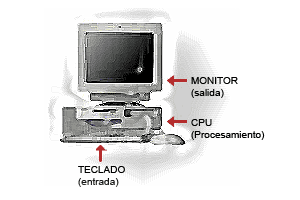
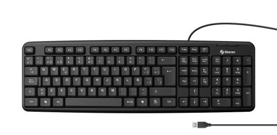
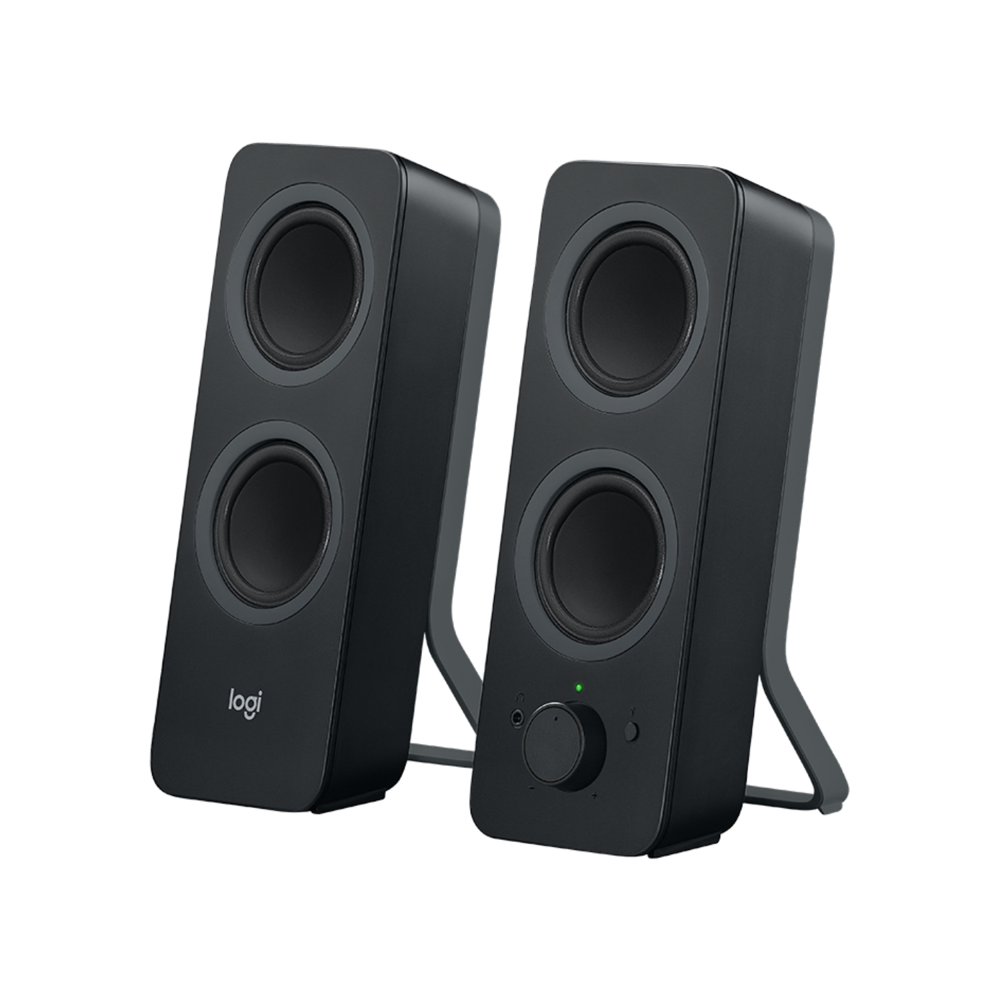

Computadora
Un computador es una máquina electrónica que está diseñada para realizar tareas específicas. En muchos países se le conoce como computadora u ordenador, pero todas estas palabras se refieren a lo mismo.
Un computador es una máquina electrónica que está diseñada para realizar tareas específicas. En muchos países se le conoce como computadora u ordenador, pero todas estas palabras se refieren a lo mismo.
Se denomina hardware a todos los elementos tangibles de la computadora: procesador, monitor, teclado, tarjetas, circuitos integrados, cables, etc.
El hardware de una computadora está compuesto por la unidad central, los dispositivos periféricos de entrada, de salida y de entrada/salida, así como por los cables, conexiones y puertos que permiten la interacción de todos ellos. Todos estos elementos en conjunto constituyen la arquitectura básica de la computadora.
Los componentes de hardware básicos de una computadora son tres: unidad central de proceso o CPU, monitor y teclado.
La unidad central de proceso o CPU es, como su nombre lo indica, la unidad principal de la computadora y tiene tres funciones principales:
El teclado es el dispositivo periférico de entrada básico y sirve para introducir datos a la computadora. Sus teclas se agrupan generalmente en tres secciones: teclas de función, colocadas en el lado izquierdo o en la fila superior; teclas alfanuméricas, colocadas en la zona central; y zona numérica del lado derecho, que es opcional, es decir, no está incluida en todos los teclados.
El monitor del computador, también conocido como pantalla, muestra la información de tu equipo como imágenes y textos, que son generados gracias a una tarjeta de video que se encuentra en el interior de la torre del computador.
La función del monitor es que puedas interactuar con el computador, con la ayuda del ratón y el teclado.
Hay varios tipos de monitores. Algunos son muy grandes, como una caja. Estos pueden tener tecnología de tubos de rayos catódicos (CRT, por sus siglas en inglés), que permiten visualizar imágenes mediante un haz de rayos catódicos.
Existen otros que son bastante delgados y pueden usar una pantalla de cristal líquido (LCD), un diodo emisor de luz (LED) o pantallas de plasma.
Las pantallas muestran las imágenes a través de pixeles, que son las unidades básicas de una imagen. La resolución de los monitores depende de la cantidad de píxeles que estos tengan.

El ratón hace parte de los periféricos de tu equipo y es la parte del computador que te permite interactuar con los objetos que aparecen en la pantalla, por medio de un cursor o puntero que verás en el monitor.
Por lo general, el mouse o ratón tiene dos botones:
La mayoría de los ratones cuentan con una rueda central conocida como scroll. Con ella podrás desplazarte por los documentos desde la parte superior a la inferior y viceversa.
Son los dispositivos que le dan salida de audio al computador, gracias a ellos puedes escuchar el sonido de la música o video que estés reproduciendo. Dependiendo del modelo, los puedes conectar al puerto USB o al de audio.
